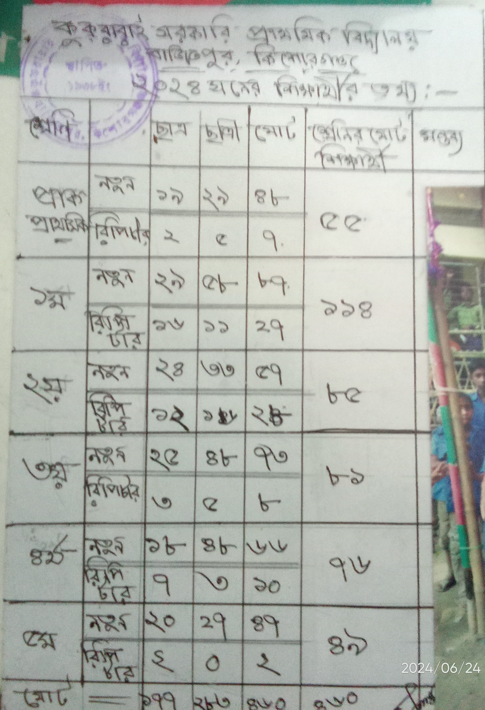

নোটিশ ১
তারিখ: ১৮.০৮.২৪
দ্বিতীয় প্রান্তিক মূল্যায়ন শুরু হবে ৯/৯/২৪ ইং তারিখ থেকে।
নোটিশ ২
তারিখ: ২৮.০৮.২৪
অনিবার্য কারণে ২৮ তারিখের বাওবি পরিক্ষা স্থগিত।
নোটিশ ৩
তারিখ: ৩০.০৮.২৪
আগামী মাসের ৫ তারিখে বাংলাদেশ ও বিশ্বপরিচয় পরিক্ষাটি অনুষ্ঠিত হবে।
